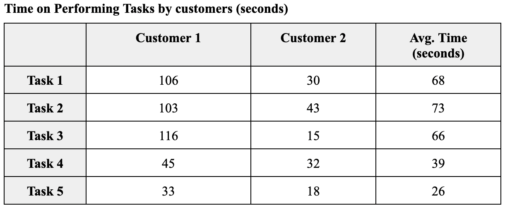

The proposed solution aims to monetize the IG shop owners' and young online shopping lovers’ experiences by creating a one-stop platform business model where the shop owners can easily manage their shops and increase exposure while the online shopping lovers could have a better shopping experience by finding products and shops more easily with different filters or keywords as well as enjoying special offers. The geographic area that has been selected for a pilot market entry assessment is Hong Kong which better limits the scope. It is also crucial to conduct the following further testing of key hypotheses regarding what will attract the above target groups and keep them returning by drawing them into the paid membership programme.
The following five usability tests were created to evaluate how simple it is for the IG shop owners to manage their shops and orders as well as collaborate with other shops to increase their exposure:
1. Register
2. Manage their shops (update shop information and upload products)
3. Manage orders
4. Check analytics data
5. Contact other shops in terms of joint-shop promotion
The following five usability tests were created to evaluate how simple it is for online shopping lovers to find products and shops with different filters or keywords as well as place orders and check order status:
1. Find interested products
2. Check product info. and place an order
3. Find interested IG shops
4. Register
5. Check the order status
Four post-test questions were also created to obtain recommendations for improvement:
1. Please rate the overall process ( 1= very dissatisfied; 5 = very satisfied)
2. What difficulties did you encounter when performing the tasks?
3. Does any improvement need to be made to the website?
4. Will you pay to use the website with the current price range? If yes, which plan will you
choose?
A/B test:
Since drawing people to register is one of the most important goals for the sustainable development of the website, the design of the registration buttons was tested in the A/B. For the original version, the registration buttons for both IG shop owners and shoppers were a part of the menu bar. When I conducted the usability test with one of the interviewees, she also mentioned that the buttons were not sharp enough to notice. In this regard, I added a background colour (red) to the buttons and put them on the right-hand side of the navigation bar to see whether the variant 1 version will draw more people to click on the registration buttons.
The usability result can be seen as follows:
Analysis:
The completion rate is 100% for all participants could be explained by that the current website was designed and improved based on their previous comments on the low-fidelity prototype, so to some extent they are perhaps familiar with the website structure or the flow of using it as they had participated in the low-fidelity prototype before and provided suggestions on it. However, they still have new suggestions or comments on the current website, which will be discussed in the post-interview part later.
For the IG Shop owners, they took the longest time to perform task 2 (mean = 130) which is still a reasonable time as they need to fill in the shop and product information. While task 3 and 4 consumed them about 10-15 seconds to finish (mean = 14 and 10) as the steps were quite straightforward and what they need to do was just check. Task 1 required them to input information as well for registration so it is also a reasonable time (mean = 38). Task 5 seems to be the second time-consuming task (mean = 38) but IG shop owner 1 particularly consumed more time as the loading time to the shop page was a bit long. This could be related to the large image file size, which requires further improvement.
For customers, the average time for tasks 1,2 and 3 is relatively long (mean = 68, 73 and 66) as customer 1 consumed a bit long time to load the webpages compared to the customer 2. This could be also related to the large image file size. Task 5 consumed the shortest time (mean = 26) which is a straightforward task to check the order status. While task 4 is also a straightforward task which required customers to register and fill in the information.
Recommendations from IG shop owners:
For the function part:
1. Add a page to view my all products
2. Standardize payment methods on the website)
For the design part:
1. Show logos of the payment methods on the footer for customers easily to know
For the design part:
1. Willing to consider the “VIP商店” plan if the price is within $1000 OR it includes SEO solutions for both website and IG shop
Recommendations from customers
For the function part:
1. Add a pop-up to notify the users that they successfully registered
2. Stay at the product detail page upon clicking “加入購物車” and show a pop-up of “已加入購物車” instead
For the design part:
1. Hide “我的商店” and put “註冊/登入” buttons on the right-hand side of the navigation bar so as to keep it clear for users
2. Show users’ login status on the navigation bar so that they can clearly know if they already logged in or not
For the design part:
1. Willing to consider the “VIP商店” plan if the price is within $1000 OR it includes SEO solutions for both website and IG shop
Since drawing people to register is one of the most important goals for the sustainable development of the website, the design of the registration buttons was tested in the A/B. For the original version, the registration buttons for both IG shop owners and shoppers were a part of the menu bar. When I conducted the usability test with one of the interviewees, she also mentioned that the buttons were not sharp enough to notice. In this regard, I added a background colour (red) to the buttons and put them on the right-hand side of the navigation bar to see whether the variant 1 version will draw more people to click on the registration buttons.
Since drawing people to register is one of the most important goals for the sustainable development of the website, the design of the registration buttons was tested in the A/B. For the original version, the registration buttons for both IG shop owners and shoppers were a part of the menu bar. When I conducted the usability test with one of the interviewees, she also mentioned that the buttons were not sharp enough to notice. In this regard, I added a background colour (red) to the buttons and put them on the right-hand side of the navigation bar to see whether the variant 1 version will draw more people to click on the registration buttons.
As of 4 December, although more users were assigned to the original version, it seems that the variant 1 version performs better than the original version in terms of pageviews per client. Combing the comments from the usability test and the results A/B test, it will be better to highlight the registration buttons with the colour background and place them on the right-hand side of the navigation bar instead of aligning with the menu bar so as to stand out and easier to catch users’ attention.
Click here if you are interested in the usability test and A/B test.